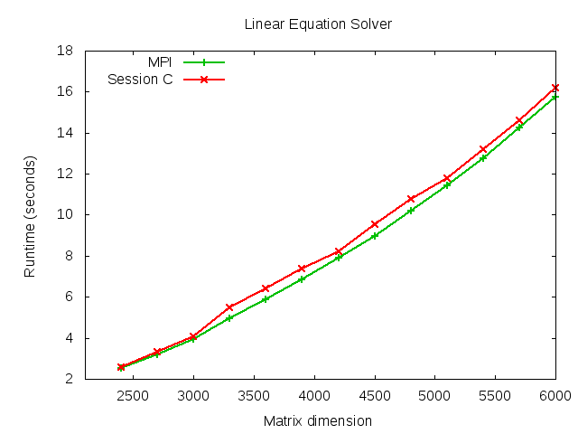

This paper presents a new efficient programming toolchain for message passing-based parallel algorithms which can ensure, for any typable programs and for any execution path, a full guarantee of deadlock-freedom, communication safety and global progress through satatic checking. The methodology is embodied as a multiparty session-based programming environment for C and its runtime libraries which we call Session C.
Programming starts from specifying a multiparty topology for a target parallel algorithm, such as a ring, wraparound mesh and butterfly topology, in the shape of a global protocol using a protocol description language. From this global protocol, the projection algorithm generates endpoint protocols, based on which each endpoint C program is designed and implemented with a small number of concise session primitives. The endpoint protocol can further be refined to a more optimised protocol through subtyping for asynchronous communication, by which semantically equivalent optimised programs with the original safety guarantees can be obtained. The underlying theory can ensure that the complexity of the toolchain stays in polynomial time against the size of programs.
We apply this framework to representative parallel algorithms with complex communication topologies. The benchmark results show that Session C performs competitively against MPI.
Published version via DOI | Paper | Slides | www
Comparison of implementations of N-body simulation in Session C with MPI.

Comparison of implementations of a parallel linear equation solver in Session C with MPI.
Comparison of implementations of Fast Fourier Transformation in Session C with MPI.
Comparison of implementations of a Jacobi method for solving the Discrete Poisson Equation in Session C with MPI.